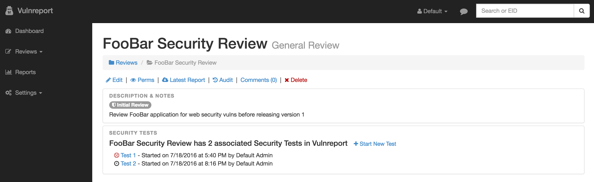
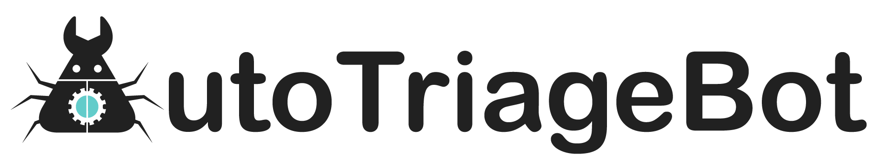
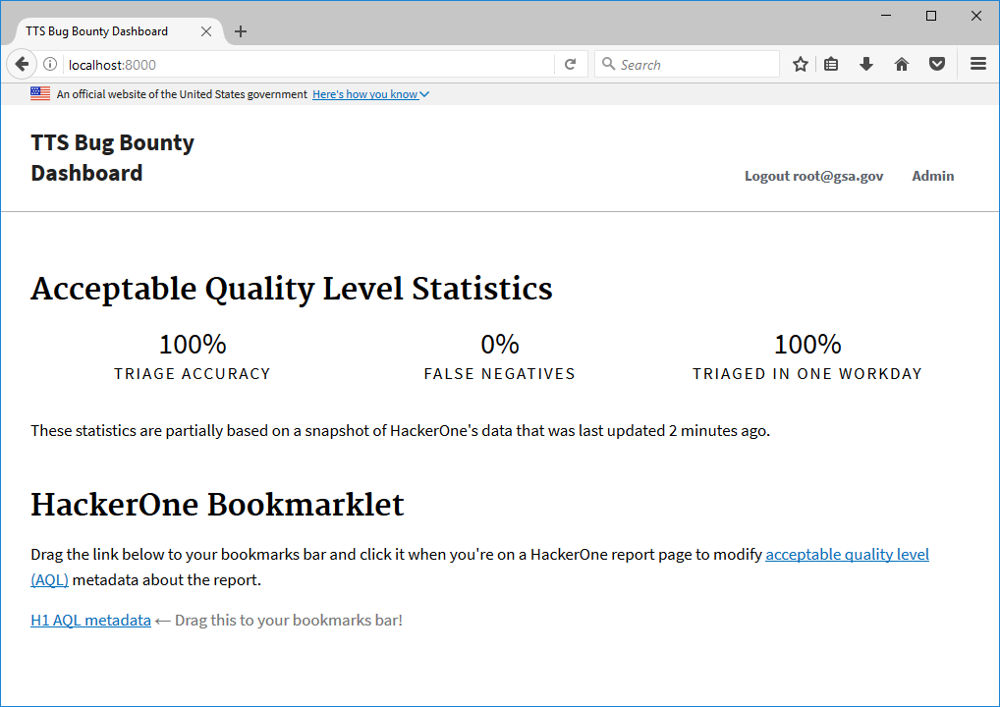

When it comes to actually discussing reports internally, make sure to use end-to-end encrypted applications such as Signal.
The Vulnreport dashboard is a great tool to use for keeping track of security vulnerabilities and the dashboard allows your team to easily review patches. On top of that, Vulnreport can automate a lot of the mundane tasks for your security engineers. The tool also has really detailed and helpful documentation.
Another great tool by the Salesforce team, AutoTriageBot is a bot that will verify, deduplicate, and suggest payouts for vulnerability reports in your HackerOne inbox.
The General Service Administration’s Technology Transformation Service published a prototype dashboard for their bug bounty program. The dashboard keeps track of your HackerOne reports and the health of your program.
h1-python is a HackerOne API client for the Python language, which should help you create Python integrations for HackerOne.